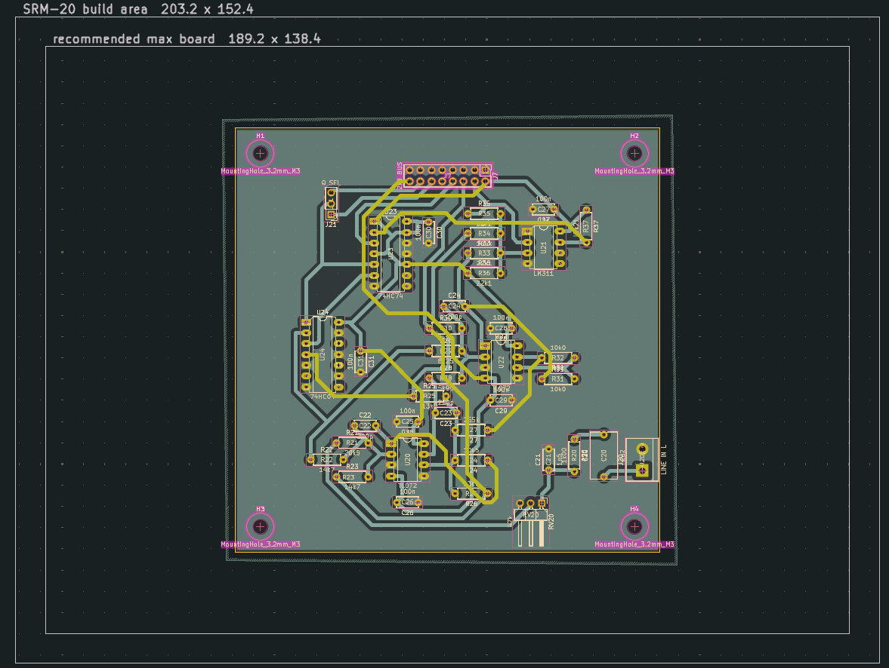
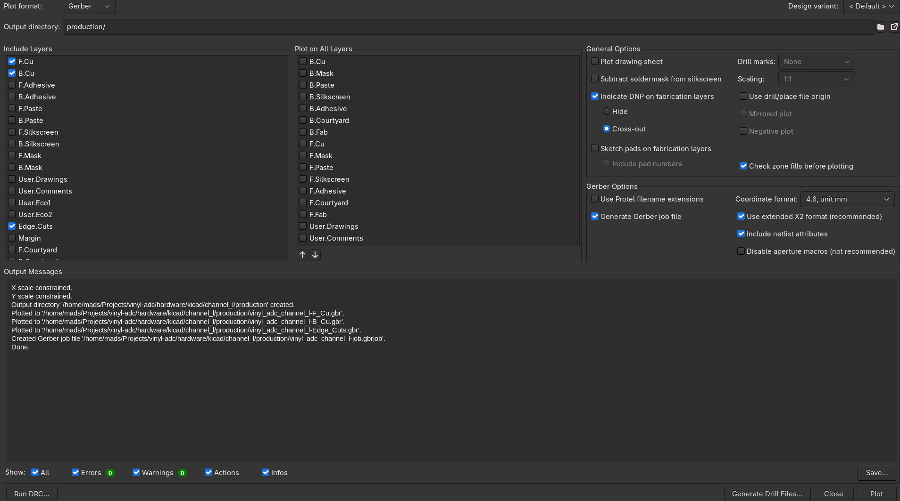

From KiCad
Three buttons in KiCad's PCB editor take a board from your design to SRM-CAM: one shows whether it fits the mill, one sets the design rules for how it is made, and one sends it. Set the rules before you route.
srm-cam/, and the board opening in SRM-CAM as a laser board.Add the buttons
In SRM-CAM: . It copies the plugin into every KiCad it finds and tells it where SRM-CAM is. SRM-CAM also offers this once, a moment after it opens (Add it / Not now). Restart KiCad. The three buttons are on the PCB editor's toolbar and under .

Changing the tool profile in SRM-CAM tells the plugin the new bit, so its checks follow the bit you use. If SRM-CAM has been moved, opening it once is enough for Send to SRM-CAM to find it again.
Show SRM-20 build area
Draws two rectangles on User.Drawings, centred on the board: the mill's build area, 203.2 × 152.4 mm, and the recommended largest board, 189.2 × 138.4 mm (7 mm a side for holding it down). Nothing is saved yet: Ctrl+Z undoes it. It needs an outline on Edge.Cuts first.

Set design rules for SRM-CAM
Opens a window that asks how the board is made, shows the board's rules now beside what the method needs, and sets them when you press Apply.
| Board now | Set to (mm) | |
|---|---|---|
| Track width | 0.25 | 0.30 |
| Clearance (net classes) | 0.20 | 0.25 |
| Board minimum clearance | 0.00 | 0.20 |
| Pour to other copper | 0.50 | 0.25 |
| Thermal relief gap | 0.50 | 0.25 |
| Pour minimum width | 0.25 | 0.25 |
| Copper to board edge | 0.50 | 0.50 |
| Smallest hole (drill) | 0.80 | 0.80 |
Sets the net classes, the board's minimums, every pour and the defaults for new pours, then refills the pours. Tracks are not moved: run DRC afterwards. Save to keep, or close without saving to undo.
A drawing of the window with its real labels (KiCad's own windows cannot be screenshotted here). The "Board now" column is an example; the "Set to" column is the laser's numbers.
- The three methods: Mill: 0.8 mm flat endmill, Mill: 0.8 mm ball mill (0.44 mm channel) and Fiber laser copper (holes and outline on the mill). The numbers each one writes are in the rules table, with the animation.
- After Apply a message lists every change ("Net class Default clearance 0.20 -> 0.25 mm" and so on), says the pours are refilled and the tracks are where they were, and reminds you to save. Then save the board (Ctrl+S) and run .
- What it changes: clearances and pours are set up or down to the method; the Default class's track width is set, other classes are only raised; via and hole sizes are only ever raised.
- Custom rules (fine-pitch footprints) are not touched; orange notes under the grid warn about them. After editing them, run DRC once so KiCad reads them again, then refill (B).
- The choice is kept in
srm-cam/method.jsonbeside the board, so the window opens on it next time and SRM-CAM reads it. Without one, the window guesses from the board's rules.
Send to SRM-CAM
- Saved once?A new board must be saved once first, so SRM-CAM has a name and a folder for the files. Later edits do not need saving: Send plots the board as it is on screen.
- The checkIt checks the board's rules and holes against its method. If anything is tighter than the method can make, it says so and sends nothing yet.
- The plotIt plots every layer SRM-CAM reads and both drill files into
srm-cambeside the board, after clearing the old plot out of it. - The hand-overIt gives the folder to SRM-CAM: to the window that is open, or it starts SRM-CAM with it.
This board asks for more than its method can make, checked as Fiber laser copper (holes and outline on the mill):
Net class Default clearance: 0.20 mm
Open the design rules and set them for how the board is made? The board is not sent yet.
A drawing of the warning with its real wording; the orange line is an example of what it lists. With no method set, it checks against the method the board's own rules point to and says "(guessed …)".
What lands in srm-cam/
File (board called boost_v2) | What it is |
|---|---|
boost_v2-B_Cu.gbl, -F_Cu.gtl | The copper. B.Cu must be there, or Send stops. |
boost_v2-Edge_Cuts.gm1 | The outline: the cut-out, and the board on the laser. |
boost_v2-PTH.drl, -NPTH.drl | The holes, plated and unplated, Excellon in mm. Oval holes (slots) come through too. |
-B_Mask.gbs, -F_Mask.gts | Solder mask: adds the Solder mask row. |
-F_Silkscreen.gto, -B_Silkscreen.gbo | Silkscreen: adds the Silkscreen row. |
-F_Paste.gtp, -B_Paste.gbp | Paste: adds the Paste stencil row. |
method.json | How the board is made, from Set design rules for SRM-CAM. Kept when the plot is cleared. |
| Send says | What happened |
|---|---|
| SRM-CAM is running a job, so the board was not loaded. | A run is in progress in SRM-CAM. The files are written; send again when it is done. |
| SRM-CAM was not found. | Open SRM-CAM once (and use if it was never added). The message names a "KiCad ▸ Set up the build-area plugin…" menu: that item is the Help menu entry above. |
| The board could not be plotted: … | KiCad's own error follows. Fix it in KiCad and send again. |
The method chip
Every board in SRM-CAM has one method, shown on the chip at the top left: Laser · from KiCad, Flat mill · guessed, Ball mill · chosen. It decides the checks, the tool and the rows on the rail. The same choice is under How it is made on Your board.
| Method | Narrowest gap | Who makes what |
|---|---|---|
| Laser copper (mill drills and cuts out) | 0.20 mm | The mill drills and cuts out on tabs; the laser etches the copper. The usual way. Make a board. |
| Flat mill (0.8 mm endmill) | 0.80 mm | The mill does it all. Mill a whole board. |
| Ball mill (0.44 mm channel) | 0.44 mm | The mill does it all, finer. How small can it go? |
- Change it: click the chip and pick another, at any time. Picking Laser unticks double-sided: the mill drills straight through, and the laser etches each face on the same holes.
- "· chosen" wins over KiCad. If you changed the method in KiCad later and the chip still shows your old pick, pick again on the chip.
Without the buttons: plot by hand
- RulesSet the numbers from the rules table in before you route.
- Plot Gerbers: at least B.Cu and Edge.Cuts (and F.Cu for two faces), into one folder. Add the mask, silkscreen and paste layers for those jobs on the laser. Refill the zones if KiCad asks.
- Drill filesSame dialog, Generate Drill Files…: Excellon, millimetres, into the same folder. Keep both files, plated and unplated.
- OpenIn SRM-CAM, (Ctrl+O). Without a
method.jsonthe method is guessed from the gaps: check the chip.


Demo board on Your board loads a bundled 40 × 30 mm coupon that exercises every operation.